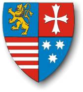

93892 Magnus Mowatt av Balquholly och Loscragy
* 1489 Balquholly, Banffshire, Scotland
† 1526 Aberdeen, Scotland
Blev högst 37 år
* 1489 Balquholly, Banffshire, Scotland
† 1526 Aberdeen, Scotland
Blev högst 37 år
187784 Sir John Alexandersson Mowat av Loscragie and Freswick
* omkring 1440 Balquholly, Banffshire, Scotland
† omkring 1512
Blev ca 72 år
* omkring 1440 Balquholly, Banffshire, Scotland
† omkring 1512
Blev ca 72 år
375568 Alexander Mowat av Loscragie
* omkring 1420 Turriff, Aberdeenshire, Scotland
† efter 1494
* omkring 1420 Turriff, Aberdeenshire, Scotland
† efter 1494
751136 John Mowat av Loscragie
* omkring 1400 Turriff, Aberdeenshire, Scotland
† omkring 1474 Scotland
Blev ca 74 år
* omkring 1400 Turriff, Aberdeenshire, Scotland
† omkring 1474 Scotland
Blev ca 74 år

187785 Lady Agnes Forbes
* omkring 1460 Pitsligo, Aberdeenshire.Scotland
† 1526
Blev ca 66 år
* omkring 1460 Pitsligo, Aberdeenshire.Scotland
† 1526
Blev ca 66 år
375570 Sir Knight Alexander Forbes 2nd of Pitsligo & Kynnaldy
* 1425 Pitsligo, Aberdeenshire.Scotland
† 1477-03 Pitsligo, Aberdeenshire.Scotland
Riddare
Blev högst 52 år
* 1425 Pitsligo, Aberdeenshire.Scotland
† 1477-03 Pitsligo, Aberdeenshire.Scotland
Riddare
Blev högst 52 år
751140 Sir Knight William Forbes 1st of Pitsligo & Kynnaldy
* omkring 1392 Druminnor, Aberdeenshire, Scotland
† 1445-01-24 Arbroath, Angus, Scotland
Riddare
Blev ca 53 år
* omkring 1392 Druminnor, Aberdeenshire, Scotland
† 1445-01-24 Arbroath, Angus, Scotland
Riddare
Blev ca 53 år

751141 Agnes Fraser of Philorth
* omkring 1395 Philorth, Aberdeenshire, Scotland
* omkring 1395 Philorth, Aberdeenshire, Scotland

375571 Lady Maria "Jane" Hay of Erroll
* omkring 1427 Erroll, Pearthshire, Scotland
† omkring 1470 Pitsligo, Aberdeenshire.Scotland
Blev ca 43 år
* omkring 1427 Erroll, Pearthshire, Scotland
† omkring 1470 Pitsligo, Aberdeenshire.Scotland
Blev ca 43 år
751142 Gilbert Hay of Erroll
* omkring 1395 Erroll, Pearthshire, Scotland
† 1436-09-07 Ardmair, Rosshire, Scotland
Blev ca 41 år
* omkring 1395 Erroll, Pearthshire, Scotland
† 1436-09-07 Ardmair, Rosshire, Scotland
Blev ca 41 år
751143 Lady Alicia Hay of Yester
* omkring 1406 Yester, East Lotian, Scotland
* omkring 1406 Yester, East Lotian, Scotland